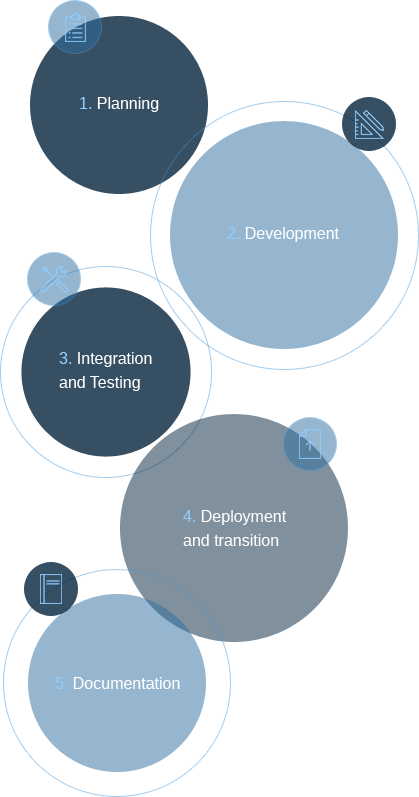

Migrating your mission-critical services is a business decision, not a technical one. We understand this at Particle 41, and this understanding informs how we approach providing migration services. Specifically, we believe in three interlocking principles.

Our Five Step Migration Approach
Planning: After reviewing your current cloud infrastructure and applications, we create a detailed roadmap to facilitate every aspect of the migration process.
Development: Particle 41 will develop systems with best-of-breed technologies to ensure that your business objectives are optimized in the cloud.
Integration and testing: We understand that an integration process is only as good as the results that it produces. With this in mind, every migration culminates in extensive testing of all of your existing applications and processes under high-load and at scale.
Deployment and transition: During the deployment of new cloud production, staging, and testing environments, we work closely with your team to ensure that all of your data is successfully migrated with minimal downtime.
Documentation: Particle 41 provides comprehensive documentation to (1) ensure a seamless transition to the cloud and (2) empower your team. This is a critical part of our service offering because client software developers and operations architects should have every resource at their disposal after a migration has been completed.
What To Expect
A robust DevOps approach to building and maintaining applications in the cloud
The benefit of the latest cloud technologies and open source frameworks